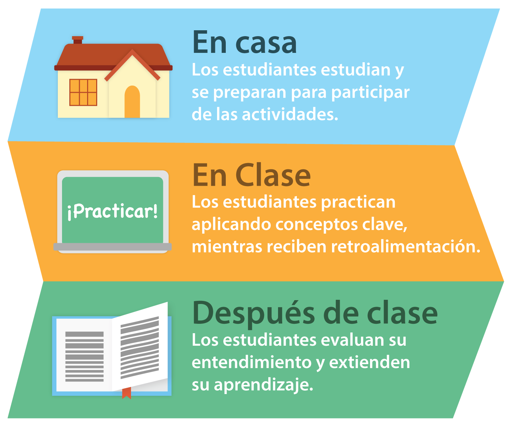

Aplicación a lo largo de los distintos módulos del curso
Como podréis comprobar, debido a la puesta en práctica de la metodología Flipped Classroom, el curso se estructura de la siguiente manera:
Parte inicial:
Antes de asistir a clase, como docentes debéis seleccionar un material digital como pueda servir de guía de lectura, un vídeo, una infografía, una presentación audiovisual, etc. de elaboración propia o de ubicada en la red. Dicho material debe presentar los contenidos de Sintaxis que vayáis a trabajar con el alumnado. Además seleccionaremos o elaboraremos distintos tipos de actividades para que comprueben el grado de adquisición de los mismos antes de asistir a clase. Por tanto, sois vosotros los encargados de proporcionar de forma online el material mediante una plataforma, como pueden ser Moodle o Edmodo, para que el alumnado realice las tareas encomendadas en sus casas.
Segunda parte:
Ya en clase, debéis promover un aprendizaje activo y colaborativo por parte de los estudiantes. Así vosotros, como profesores, adquirís la función de guías de vuestro alumnado, de facilitadores de su aprendizaje.
De este modo, sería aconsejable que estructurarais la clase de la siguiente manera:
- Introducción: En la que presentéis los contenidos sobre sintaxis que vuestros alumnos hayan trabajado en soporte digital con anterioridad en sus casas.
- Aclarar dudas y realizar una puesta en común de las cuestiones, actividades, cuestionarios sobre sintaxis trabajados online por los estudiantes en casa.
- Actividades de profundización: Vuestro alumnado debe profundizar en la comprensión de los contenidos trabajados de modo online en sus casas a través de actividades activas y colaborativas fomentando la interacción entre los propios alumnos y entre los alumnos y el profesor.
- Cuestión final: Se realiza un puesta en común de la tarea realizada en clase para pasar a explicar el nuevo contenido a trabajar fuera del aula por los alumnos.

La evaluación continua y formativa del trabajo del alumnado se lleva a cabo de manera online a través de rúbricas o cuestionarios de autoevaluación, coevaluación y heteroevaluación.